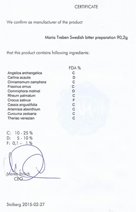

Сбор трав
Шведская горечь
Узнать больше-
1978г
Европейцы используют шведскую горечь еще с 1978 года
-
104 года
104 года прожил автор бальзама
-
40 показаний
Больше 40 показаний к применению
-
24 языка
8 млн книг на 24 языках продано о бальзаме
Что из этого списка вы находите у себя?
-
01.
Сниженный тонус, не хватает энергии
-
02.
Прыщи, бородавки и растяжки
-
03.
Слабая память и концентрация
-
04.
Болеете чаще раза в год?
-
05.
Головные боли
-
06.
Синяки. шишки, ожогои, порезы долго не проходят
-
07.
Плохо засыпаете и часто просыпаетесь
-
08.
Проблемы с желудком
-
09.
Стресс
Почему Шведская Горечь завоевала такую популярность?
Вот лишь несколько причин:
-
Эффективность как при наружном, так и внутреннем применении, более 40 показаний к применению
-
Случаи излечения с помощью сбора, когда традиционная медецина не смогла помочь
-
Постоянно выявляются новые цели-тельные свойства бальзама
-
Эффект от применения можно увидеть сразу
Даже в странах с очень высоким уровнем медицины, таких как Германия и Австрия, бальзам Шведская горечь продается в аптеке!
Получить к себе в аптечкуУдивительная история возникновения бальзама
Далеко не у каждого лекарственного препарата есть такая удивительная история возникновения, уходящая к временам Парацельса, как у «Шведской горечи». Всю свою жизнь Парацельс искал элексир долголетия!
Он эксперементировал с рецептами, в которых горькие коренья комбини-ровались с разными лекарственными травами. Позднее в 18 веке на основа-нии оставшихся после Парацельса исследований шведский доктор Клауст Замст создал рецепт удивительного элексира, который он принимал всю жизнь. Кстати, умер доктор Замст на 104-м году жизни, упав с лошади при верховой езде.
В конце прошлого века рецепт попал к известной австрийской травнице Марии Трэбэн, которая, изучив и дополнив его, популяризовала в странах Европы. Теперь сбор трав «Шведская горечь» помогает людям по всему миру.
«Кто принимает бальзам утром и вечером, тому не нужны другие лекарства, так как он укрепляет тело, оживляет нервы и освежает кровь, снимает дрожь в руках и ногах. Тело остаётся упругим, лицо молодым и красивым.»
автор бальзама, Доктор Клауст Замст /1620-1724г/
Состав «Шведской горечи»
-
Все травы, входящие в сбор, собраны в альпийском заповеднике «Гуркталь» и имеют немецкий сертификат качества.
-
Строго выверенные порции каждого компонента в составе
-
Angelica Archangelica
-
Carlina Acaulis
-
Cunnamomum camphora
-
Fraxinus ornus
-
Cammiphora molmol
-
Pheum palmatum
-
Crocus sativus
-
Cassia angustifolia
-
Artemisia absithium
-
Curcuma zedoaria
-
Theriak venezian
Часть рецепта до сих пор находится в секркте
Все травы в составе бальзама обладают сильным очищающим воздействием, при этом каждый из компонентов усиливают дейс-твие остальных.
Заказать сбор травОтзывыв о «Шведской горечи»
-
Если время от времени употреблять горечь, то вообще не будете болеть орз или ангинами. Младшему сыну я развожу расствор слабее (горечь, вода)б он с удовольствием пьет, иногда даже сам просит сделать ему горечь. Только делаю меньше половины стакана, что бы малыш смог выпить.
Аноним
-
Моя семья на протяжении многих лет пользуется шведской горечью. При болях в горле мы полоскаем горечью. Когда температура я даю горечь и при этом мы не пользуемся таблеткамию
Натали
кто решил свои проблемы
Вы принимаете участие в создании элексира
Приготовление бальзама потребует от вас минимум усилий. Достаточно залить травы 1,5 литрами водки и настоять в течение 14 дней ежедневно взбалтывая.
Но даже такое небольшое количество действий даст вам возможность почув-ствовать себя настоящим врачевателем и привнесет вашу энергетику в полу-чившийся целительный элексир.
Настоя одной упаковкой хватает на 4-5 месяцев
Создать элексир молодости и здоровьяГарантия качества
Если бальзам вам не понравится, мы вернем деньги. Сразу и без лишних вопросов. Мы дорожим своей репутацией и уверенны в продукте на 100%
но:
Этот элексир – именно то средство, которое вам всегда захочется иметь дома в аптечке и рекомендовать своим близким.
К каждой упаковке «Шведской горечи» мы прикладываем немецкий сертифи-кат качества.
Заказать сбор трав